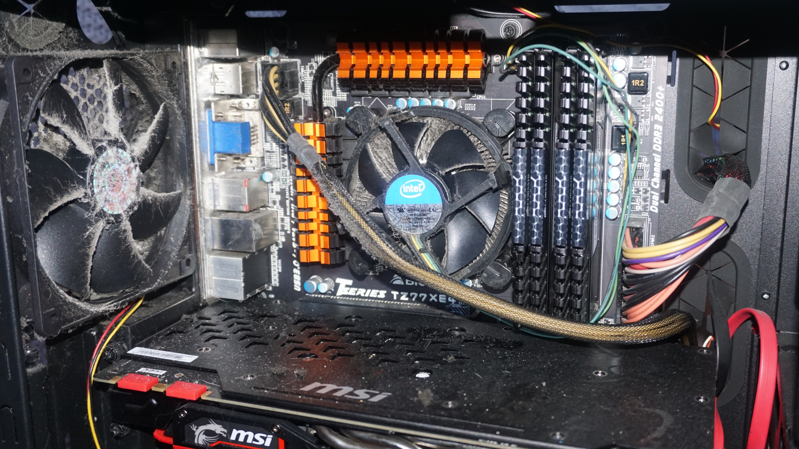

This last page will give you tips on how you can maintain your computer as maintenance is one of the easiest ways to keep your computer running as long as possible just like with anything in life if you take care of it will treat you well.
One of the most important things to do with a PC is to always back up any data you have on it. This is because there are many ways for you to lose your data or information on your computer such as files being corrupt your hard drive being damaged or even the computer being stolen so backing up your data keeps it safe and secure whenever you need it.
Another hugely important factor is dust, the more your computer runs the more it will collect dust overtime like anything else would. Dust is a problem because it starts to heat up your computer as it covers fans or components it's also important because this can damage your parts which is the last thing you want so annually clean out your computer with some canned gas or oxygen to just spray and get rid of any dust. This will go a long way in keeping your computer running for a very long time.
One more thing you can do is wire management. Not only does this look cleaner it also feels nicer mentally when you look at your PC and it is organised. Being organised and organising cables is also a skill you can take anywhere even in to work. In addition, wire management helps with computer ventilation and having a cleaner workspace is an obvious bonus in general.
Lastly an important thing to look at is antivirus or antispyware and defragmentation. Firstly, antivirus and antispyware, make sure your computer is clean when you are browsing the web or using your PC. When downloading things off the web you make sure you haven't picked up any viruses or malicious spyware that aims to steal your data and take advantage of you. Regular updates and regular scans keep you on top of this making sure there is nothing going under the radar that you don't know about. Defragmentation on the other hand is a sort of cleaning up of data in your computer, this allows your computer to run faster as there isn't any extra data being held anywhere that it shouldn't be. Think of this like a pipe that things pass through everyday and every time they do they leave a fragment of themselves in that pipe, now after a while if something has to move through the pipe it moves slower because there are parts in the pipe blocking its way and slowing its progress. Defragmentation is the process of your computer cleaning that pipe so therefore it has a clear and quick route when it must send information or data, most computers do this automatically as it is coded into their operating systems to defrag every week or fortnight but it is always important to check or maybe set up your own scheduling of this so that you know for sure that defragmentation is taking place and your computer never faces this problem.